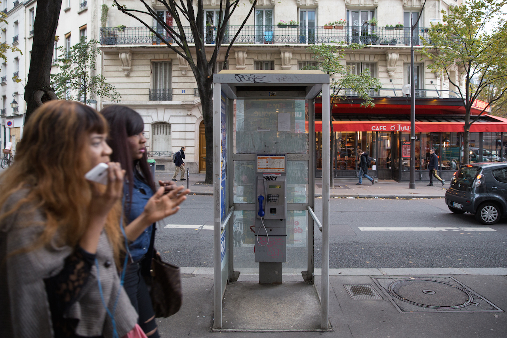
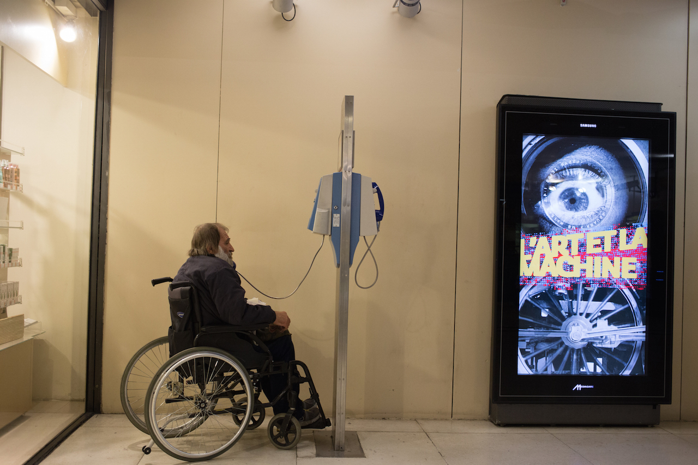
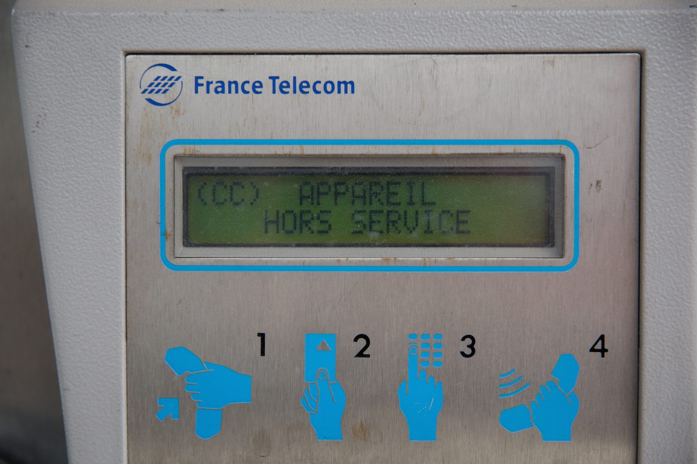
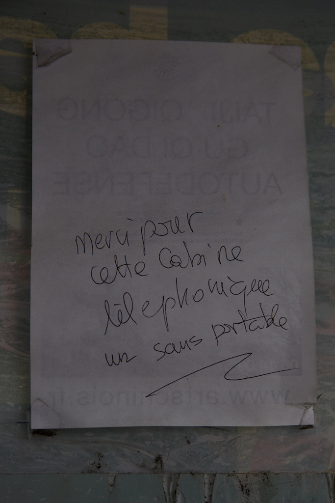
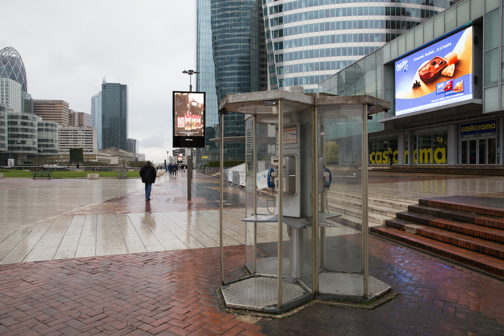

La fin des cabines téléphoniques
26 Oct 2015
Vestige d’une époque où le téléphone portable n’était pas encore roi, les dernières cabines téléphoniques vont définitivement disparaître du paysage urbain d’ici à 2017. Mais les utilise-t-on encore et pourquoi ?
La loi Macron voté en juillet dernier exclut désormais du service universel de l’opérateur historique la gestion des cabines téléphoniques. Alors qu’on pouvait en compter 300 000 en 1997, un peu plus de 40 000 aujourd’hui, le taux moyen d’utilisation d’une cabine s’est écroulé ces dernières années pour atteindre une minute par jour. Si le trafic a drastiquement baissé ces dernières années, le besoin a-t-il pour autant disparu ? Zoom sur PARIS où sur les 200 cabines actuelles seules 40 devrait subsister, mais est-ce suffisant ?
Orange va ainsi réaliser plusieurs millions d’euros d’économies par an en entretien du parc et n’aura pas à investir des dizaines de millions afin de moderniser et respecter ses obligations de mise au norme pour l’accès des handicapés.





comments powered by Disqus